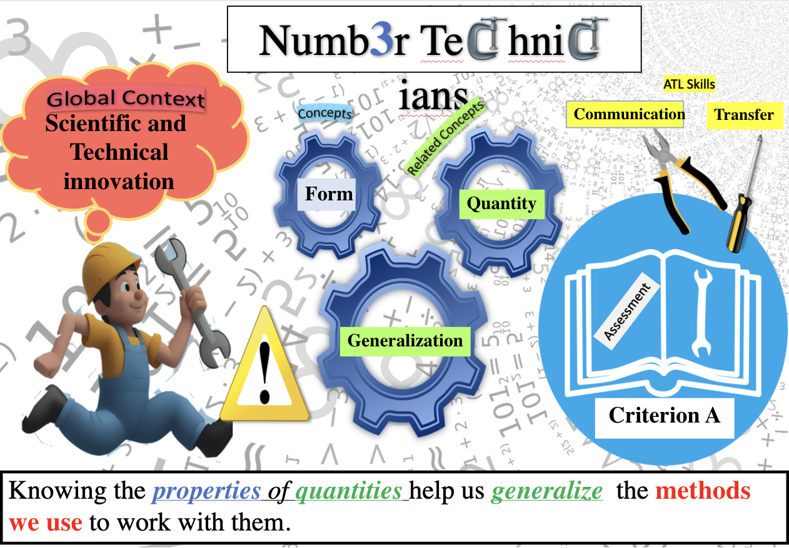
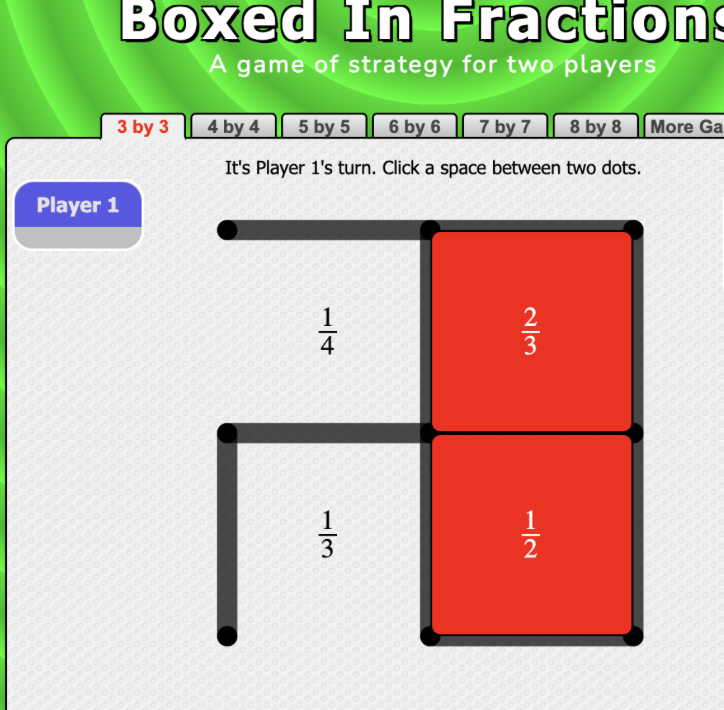
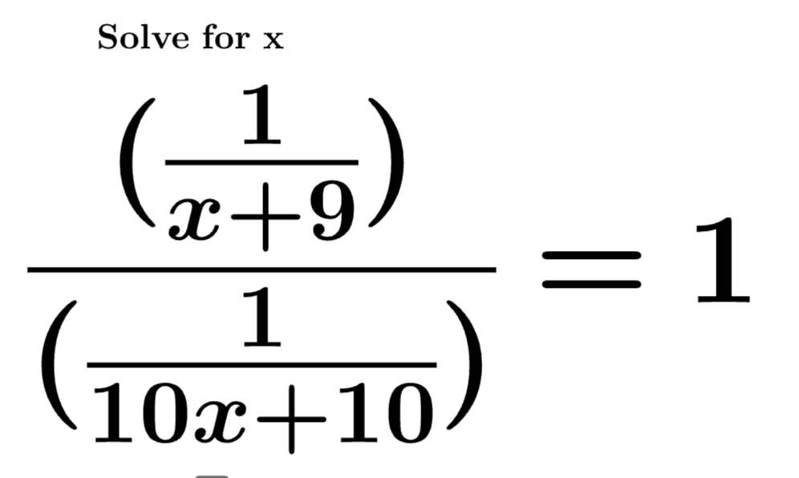
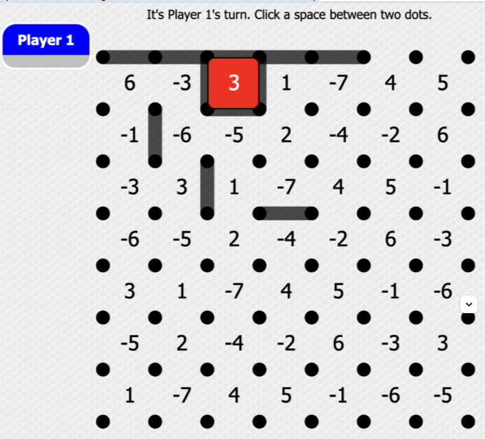
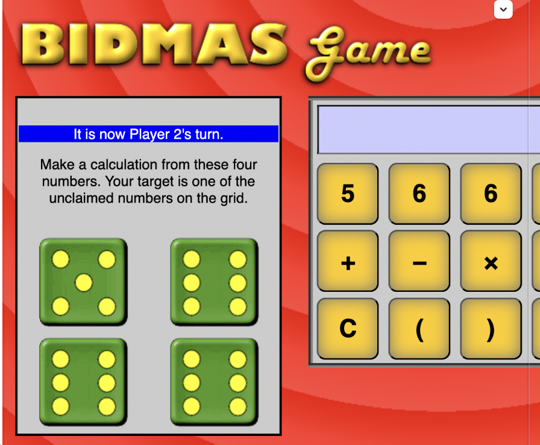
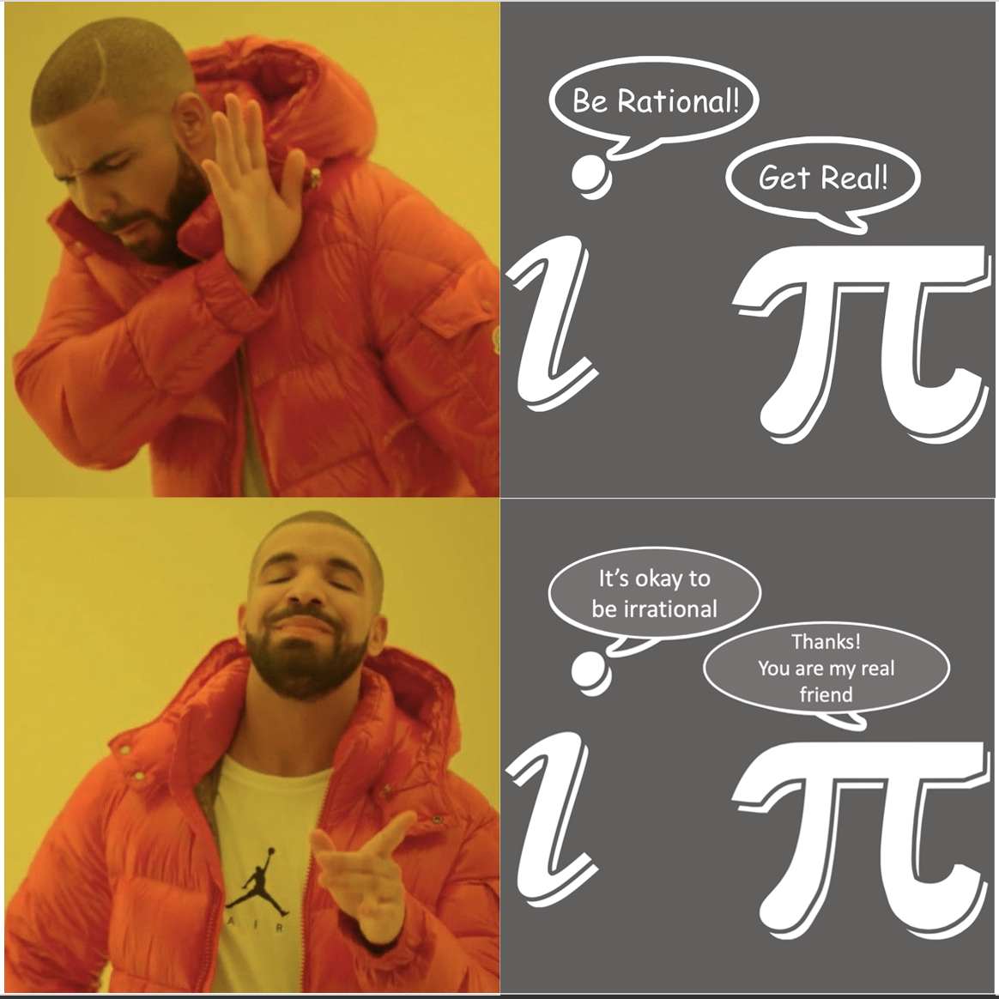
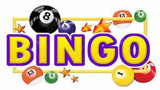
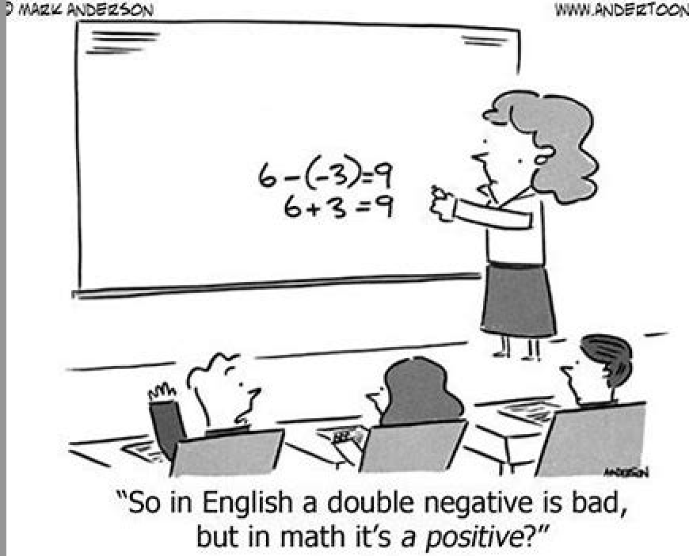
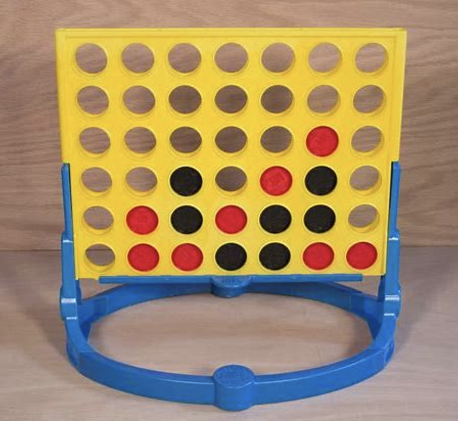
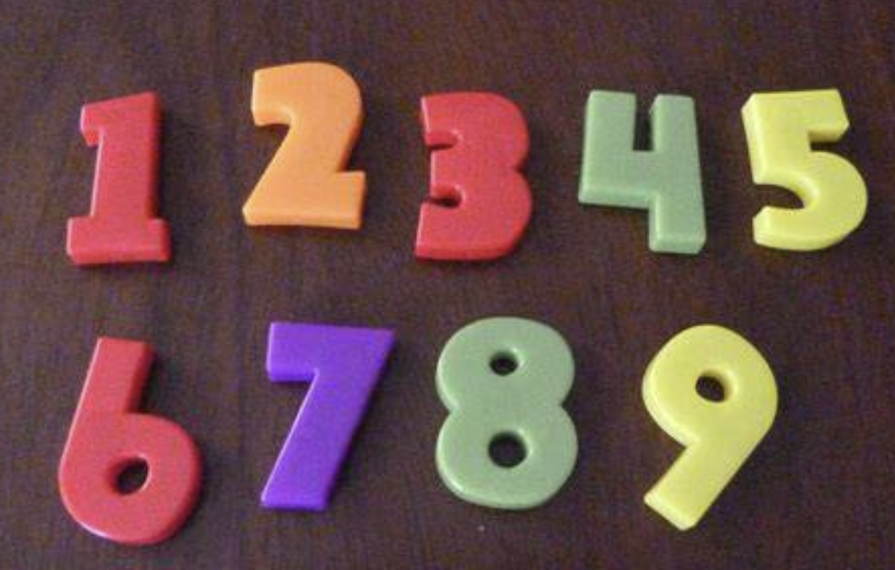

Unit 1 - Number Technicians Review
Relevant Reveal 7 Accelerated lessons
Module 3: L3-1, L3-2, L3-3, L3-4, L3-5, L3-6, L3-7, L3-8, L3-9

Refresh Questions
Unit 1 - Number technicians - Enrichment

Boxed in fractions game
Criterion B Practice with fractions

Extension - Criterion B Practice with algebraic fractions

Boxed in Integer version

Order of operations challenge

Guided Practice on Operations
IntAddo

Intmulto
Integer snake
Magic Squares

Integer operations

Integer multiplication tic-tac-toe
Combining the operations

Number challenge
Integer addition tic-tac-toe
Practice pattern spotting - B - Lucky 7s
Additional review for Criterion A